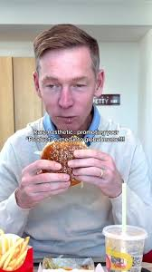

How To Get THE MEAL (McDonald's Drive-Thru Hack)
Hi. I work the drive‑thru at a very real, very cursed McDonald's. I have seen things in that headset that would make Ronald retire. And somewhere between the broken ice cream machine and the 2 a.m. nugget rush, a legend was born. We call it: THE MEAL.
THE MEAL is not on the menu. Corporate would deny its existence. But every store has their version of it — the unholy combo that breaks the kitchen, melts the POS system, and makes the person on headset question every life choice. This is my attempt to warn you. Unfortunately, it is also your step‑by‑step guide to ordering it.
What Even Is THE MEAL?
THE MEAL is what happens when someone tries to min‑max the McDonald's menu like it's an RPG skill tree. It's not just "a big order." It's a carefully optimized chaos build:
- A large custom burger order that touches every modifier we have
- Add‑ons and substitutions that make the grill screen cry
- A fry situation that ruins the salt ratio for the next ten customers
- A drink order that requires approximately four different syrups and two people to pour
The goal of THE MEAL is simple: maximum food, maximum customization, minimum price, maximum psychic damage to the crew.
Step 1: Approach The Drive‑Thru Like A Final Boss
You do not pull up and say "uhhh." You pull up like you rehearsed this in the mirror.
Here's the script:
"Hi, can I get a McDouble dressed like a Big Mac, add bacon, extra onions, extra pickles, and can you make it well‑done on the grill? Actually, make that two of those, both with no Big Mac sauce on the top bun but extra on the bottom."
If you heard a distant scream, that was the person on sandwich board realizing they now have "custom grill orders" plural, with notes longer than the receipt tape.
Step 2: Break The Fry Timeline
Next, you say: "Large fries, but can you drop them fresh and give me extra salt in a separate packet? Oh, and can you toss one of the large fries in Big Mac sauce in a box?"
This does three things:
- Forces a fresh fry drop (timer starts, backlog begins)
- Messes with the salt rhythm so someone has to manually fix it
- Requires a separate person to turn your fries into cursed poutine in the middle of a rush
Congratulations, you've now occupied grill and fries simultaneously. The kitchen is technically still functioning, but the vibes are not good.
Step 3: Construct The Beverage Gauntlet
You're not getting "just a Coke." That would be merciful. You're getting something like:
"Can I get a large drink that's half Sprite, half Hi‑C, light ice, and can you dome lid it like a McFlurry cup? Also a large iced coffee with double vanilla, light ice, but can you leave room so I can add my own stuff? Oh, and a chocolate shake if the machine's working."
Fun fact: the machine was not working until you asked. The second you say "shake," it will decide to error out. This is known.
Step 4: Side Quest The Kitchen
THE MEAL always includes one curveball item that seems harmless but destroys pacing. My personal least favorite:
"Can I also get a 20‑piece nugget, but can you sauce them in the box? Half Buffalo, half BBQ, so they're mixed, not separate?"
Now we're washing our hands, opening sauce packets, tossing nuggets like we're in a cooking sim, and trying not to touch the headset with buffalo fingers. Meanwhile, your burgers are done, your fries are dying, and the car behind you is glaring at the menu board like it owes them money.
Step 5: Say The Line
Here's the final boss mechanic. After the entire order is repeated back to you, you pause and then say:
"Actually, that's my version of THE MEAL. Do you guys know about THE MEAL?"
We do now.
At this point, everyone in the store has heard of THE MEAL against their will. The grill lead is laughing in that way that isn't actually laughing. The manager is hovering behind the headset, silently judging the subtotal. I'm staring at the screen, calculating how much of this is going to be remade because the second window forgot the extra sauce box.
Disclaimer That Is Not Really A Disclaimer
I am supposed to say: Please do not try this at home, respect your local fast food workers, etc. And honestly, yeah — be decent. Tip if you can, be patient, don't scream at teenagers because your cursed fry poutine is taking thirty extra seconds.
But if you absolutely must summon THE MEAL, at least do it with clarity. Know your order before you pull up. Don't change every other item mid‑sentence. And when you see how much work it actually takes to assemble your min‑maxed combo, maybe — just maybe — you'll treat the people in the headset like the raid squad they are.
Because from my side of the window, you're not ordering fast food. You're queuing up a boss fight. And some nights, we still wipe.